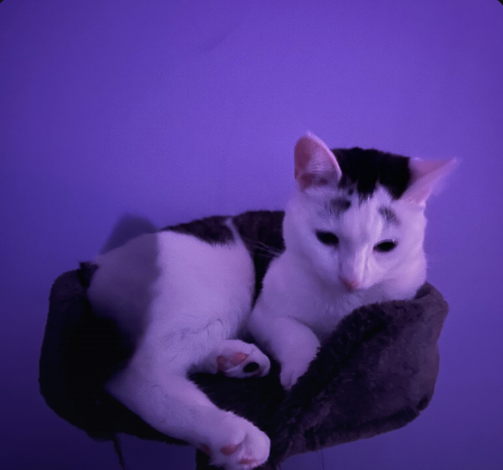

My cat Gertrude
Ruslan Amruddin
4th-year Life Sciences student at Queen's University.
Interested in computational histology, machine learning for biomedical data, and reproducible research tooling.
Currently building ML pipelines for tissue segmentation and quantitative image analysis.
Currently reading genomics and bioinformatics ML papers and textbooks.
Curious by nature — always learning, always looking to try something new.
Projects